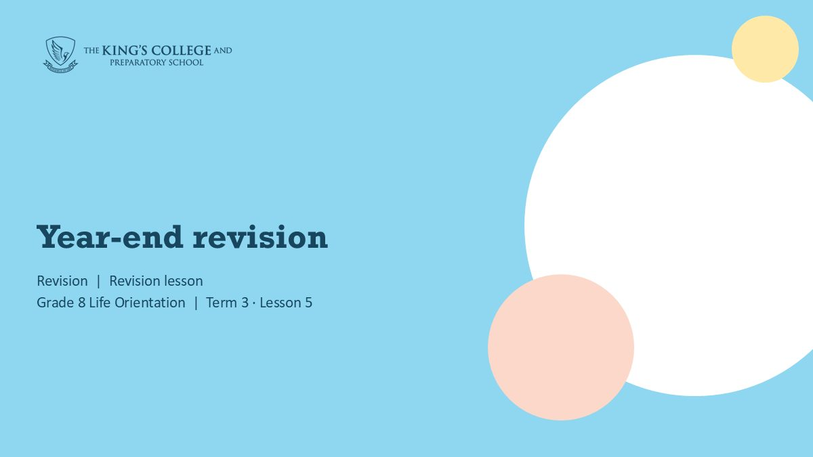

Term 3 · Lesson 5 · Revision lesson: practice paper
Year-end revision
Start here
Today I will
- Practise a year-end paper under time
- Use the building blocks in every answer
- Mark my paper and plan my exam revision
Think first
Looking back over the year, which LO topic helped you most in real life?
Words to know
- Section A
- Short questions: multiple choice, terms, true/false.
- Section B
- Questions about a scenario or source.
- Section C
- A longer answer: choose ONE of two questions.
- Mark allocation
- The numbers in brackets that show how many points to give.
Slides

Notes
Exam tips
- Read first: Read the instructions and every question before you start.
- Watch the time: About 1 minute per mark; don't spend too long on one question.
- Build answers: Statement, reason, result, example.
- Use the source: In Section B, use names and details from the scenario.
- Revise all terms: Use the exam practice banks: one set at a time, then mark it.
Remember
Read, plan, build, check.
Written practice
SECTION A (8 marks)
- A1Choose the correct answer. Write only the letter.
(a) Someone who loves leading, persuading and starting businesses fits which career category? A Realistic B Conventional C Enterprising D Social
(b) Which of these does NOT spread HIV? A Sharing needles B Hugging C From mother to baby at birth D Blood-to-blood contact
(c) In which chapter of the Constitution is the Bill of Rights? A Chapter 1 B Chapter 2 C Chapter 9 D Chapter 14(3 x 1) (3) - A2Give ONE word or term for each description.
(a) 'I am because we are': we are connected and care for one another.
(b) A line you set about what is OK and not OK for you.
(c) Fairness that gives extra support to a group that has been disadvantaged.(3 x 1) (3) - A3True or false: 'Cultural diversity weakens a nation.' If false, correct the statement.(1 x 2) (2)
SECTION B (9 marks)
Read the source
On Heritage Day the Grade 8s bring food from their families to share. Aarav brings his granny's biryani, Mia brings melktert and Thabo brings phutu and amasi. One learner pulls a face at Thabo's food and says loudly, 'That's disgusting. Why can't everyone just bring normal food?' A few learners laugh and Thabo goes quiet.
- B1Define the term 'culture'.(1 x 1) (1)
- B2Identify ONE example of prejudice in the source.(1 x 1) (1)
- B3State ONE thing Mia and Aarav could do in the moment to support Thabo.(1 x 1) (1)
- B4Explain how the comment could affect Thabo.(1 x 2) (2)
- B5Recommend TWO ways in which the Grade 8s could build unity after this incident. In each answer, also give the result.(2 x 2) (4)
SECTION C (8 marks): answer ONE question
- C1Analyse TWO ways in which pollution in a community can affect people's health.(2 x 4) (8)
- C2OR: Analyse TWO ways in which a healthy self-concept can help a Grade 8 learner say no to negative peer pressure.(2 x 4) (8)
Finished early?
Exam practice: Set C
Prepare for the year-end exam with one exam practice set.
- Turn to the Term 3 exam practice bank at the back of your Activity Book and find Set C: One nation (or pick any set from Terms 1 to 3 you feel least ready for).
- Read the brackets first, and allow about 1 minute per mark.
- Mark your answers in green with the exam practice memo on Google Classroom.
- Make a short list of the three topics you will revise first for the exam.